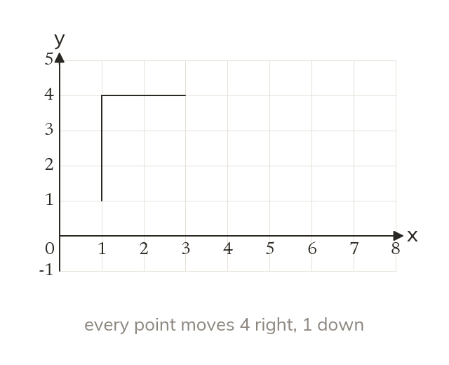
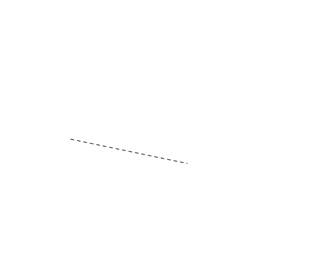
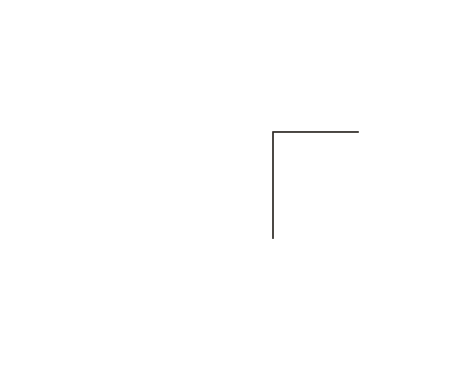

A translation slides
A translation slides a shape without turning or resizing it. Every point moves the same distance in the same direction.
A translation slides a shape without turning or resizing it, so the image is identical to the original. Every point moves the same distance in the same direction.